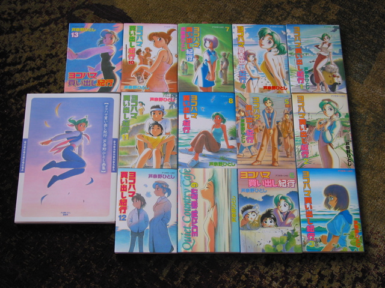

I've gotten in the habit of getting something big-ish each year for myself on my birthday. Last year, I got myself a nice watch. This year I decided to get the entire collection of Yokohama Kaidashi Kikou. (finally.) The set finally arrived today. I also couldn't stop myself from getting the art book too. Now that I've paged through it once, I'm glad I did.
Anyways, here are the books, as a sort of recorded proof:
(oi. now I really need to get cracking on learning to read Japanese.)